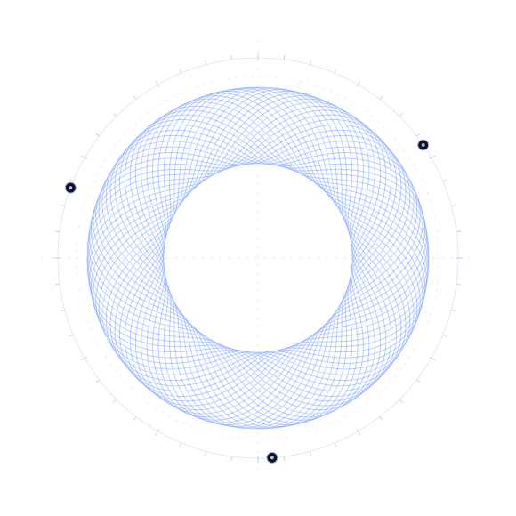

A HOME FOR WHAT COMES NEXT
Different ideas.
One wavelength.
A home for creative tools, independent projects, new ventures, and the ideas that connect them.
ANHARMONIC / FIELD NOTES001

IDEASSOUNDFORMPOSSIBILITY
ALWAYS EXPLORINGNO SINGLE FREQUENCY.
Music & sound✳Tools & experiments✳Projects & ventures✳Stories & ideas
02 / ROOM TO GROW
The lab doesn’t
stop at one idea.
This is the beginning of a wider creative space. New work will find its home here as it takes shape.
03 / THE JOURNAL
Behind the work.
Between the ideas.
A place for process, perspectives, experiments, and the occasional detour.
[ OPEN NOTEBOOK ]✳Good things
start with a note.
The journal is taking shape. Future posts and updates from across AnharmonicLabs will live here.
○ FIRST ENTRIES ON THE WAY
04 / INDEPENDENT BY NATURE
One home.
Space to be many things.
AnharmonicLabs brings the different sides of a creative practice together: making tools, following questions, building projects, and sharing what comes out of it.
Each project has its own identity. This is the place where they connect.
Have something in mind? Say hello ↗